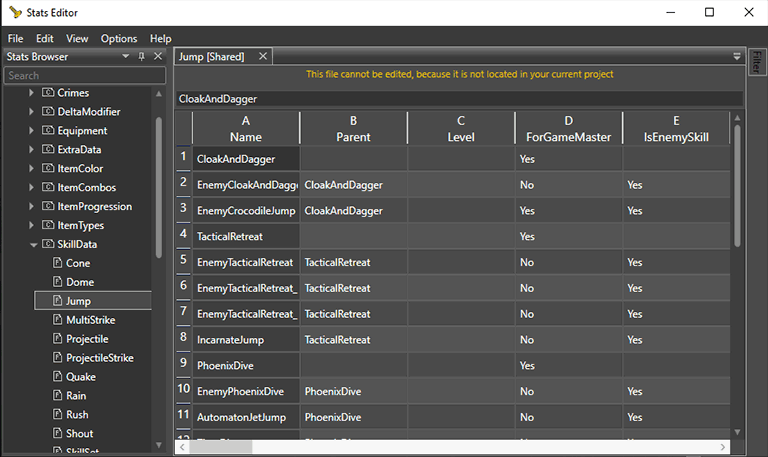

Stats Overview
The Divinity Engine 2 has an editor called the Stats editor which you use to edit values for things like Skills, Statuses (or technically Potion Effects), Weapon and Armor stats and Equipment sets.
Potential things you can do are making entirely new skills or editing existing ones, making entirely new status effects or editing existing ones, making stats for particular kinds of weapons or specific weapons or armor pieces or editing existing ones.
Keep in mind this is for statistics on these types of things, such as damage values or cooldown timers, this is not the editor for custom visual effects or models (those are beyond my scope of knowledge… but if you want to know, they are the Material Editor and AllSpark Editor).
The way the editor works is you enter a name for a specific source that will contain statistics, for example the name of a skill, and you fill information into fields given to you by the editor depending on what it is you are making.
Skills
Skills are made completely new in the Stats editor under stat pages for specific types of skills, such as a page for Shout Skills or Jump Skills.
Here you determine exact characteristics of your skill, such as what skill school it falls under (Pyromancy, Geomancy, etc.), how many Action Points it costs to use, and its cooldown length. You can also change things like what effects will play with your skill and what animations the character will do that uses it.
Statuses
Statuses are made under specific pages depending on the status, similar to how skills work, but here its only determined that it is a status effect and how it will look and display like on a character or item.
The actual stats that are applied to a character when they have a certain Status Effect are determined in the Potions page under Stats, and Status Effects will take an entry from the Potions page and use it to apply to characters.
Confusing? Let me give an example:
Under StatusData, there is page called Status_INCAPACITATED, where a status effect called FROZEN is entered in the first field. Here, FROZEN's DisplayName, Description, and other visual details are determined, as well as what its Saving Throw is and how long the status effect lasts on apply.
We will then go to the dropdown for Stats and go to the Potion page, where we see an entry named Stats_Frozen. This holds all of the specific statistics that will be applied to a character when they receive the FROZEN status effect, such as fire resistance -20 and -100 dodge chance.
In order to identify the Stats_Frozen stats as the stats to be applied to a character when they receive the FROZEN status, in the column called StatsId for the FROZEN status, the name of the Potion stat is given, which is Stats_Frozen.
Weapons and Armor
Weapon and Armor stats are stat entries that specify statistics about weapons or armor and are applied to a weapon or armor template.
Here we determine things like durability, damage, damage type and equip requirements. Pretty straight-forward stuff.
Equipment
Equipment Sets are found under Equipment -> Equipment (lol) and are just that, sets of equipment. You use these to give sets of equipment to characters or other things without having to script giving them every single specific item you need. An example is the starting supplies given to every player character when they start a campaign for the first time, as well as the clothes and weapons they start equipped with.
All you do is type in the name of every piece of equipment that will be included in the equipment set in its own field in that equipment set's row.